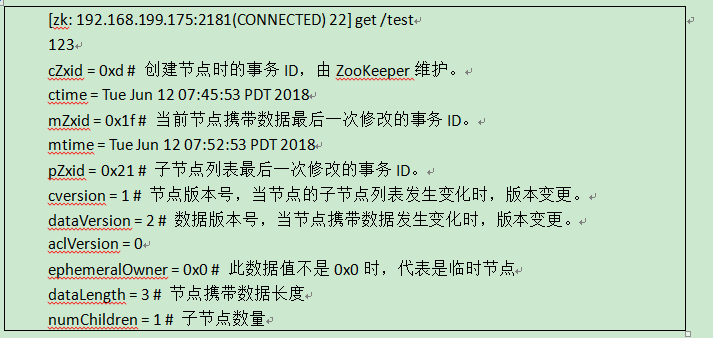

如何进入zookeeper控制台？
第一种方式：直接输入zkCli.sh命令连接localhost:2181的控制台
第二种方式：输入zkCli.sh -server 192.168.3.100:2181进入192.168.3.100:2181的控制台
控制台常用命令
ls 路径
作用是列出指定路径下的节点资源
如：ls / 列出/路径下的所有节点资源
create [-e] [-s] 节点名 携带的数据
作用是创建节点并指定节点携带的数据
如： create /test 123 创建一个/test节点，节点携带数据信息123。 create -e /test 123 创建一个临时节点/test，携带数据为123，临时节点只在当前会话生命周期中有效，会话结束节点自动删除。
create -s /test 123 创建一个顺序节点/test，携带数据123，创建的顺序节点由ZooKeeper自动为节点增加后缀信息，如-/test00000001等。-e和-s参数可以联合使用。
get 节点名
作用是查看指定节点的数据
如：get /test

set 节点名 数据 [version]
作用是设置指定节点的数据
如： set /test 'test data'。 如果要设置的数据中有空格，则使用单引号界定数据的范围。每次修改数据后，dataVersion属性自增。那么在set命令中可以指定version，version数据必须与上次查询的值一致，用于保证本次修改命令执行时，没有其他会话修改此数据。
delete 节点名 [version]
作用是删除指定节点，此命令不能删除有子节点的节点。
如：delete /test。
其中version参数和set命令的version含义一致
rmr 节点名
作用是递归删除指定结点，包括子节点
quit
作用是退出控制台